October 24th-31st, 2018 Notebook
My main goal this week is to get convincing computational results that this method works well. The algorithm is modified from last week in the sense that it now has epsilon decay over time, and so I started by testing that out.
Since this seems to be performing well on the one case that ive given it, I want to try harder problems, so im going to include noise. I'm also going to try doing the EDM promblem, and compare it to the LogDet and
Contents
Decrease Epsilon with each iteration
if exist("Section1_testDecay.mat", 'file')~=2 pavg=0.70; eps=15; x=randn(10,50); D=x'*x; [ M,b,row,col ] = sampleUniform( D,pavg); P=~(M==0); [X1,U1, obj1]= aggregatedRelaxationPADM(M,P, eps, 1 ); [X8,U8, obj8]= aggregatedRelaxationPADM(M,P, eps, 0.8); [X5,U5, obj5]= aggregatedRelaxationPADM(M,P, eps, 0.5); [u,s1,v]=svd(X1); [u,s8,v]=svd(X8); [u,s5,v]=svd(X5); save("Section1_testDecay.mat") else load("Section1_testDecay.mat") end fprintf("Eps Decay Rate: %f \t Log Percent Error: %f \t log 11th Largest SV: %f \t Number of Iterations: %i\n", 1,log10(norm(D-X1, 'fro')/norm(D, 'fro')),log10(s1(11,11)), length(obj1)); fprintf("Eps Decay Rate: %f \t Log Percent Error: %f \t log 11th Largest SV: %f \t Number of Iterations: %i\n", 0.8 ,log10(norm(D-X8, 'fro')/norm(D, 'fro')),log10(s8(11,11)), length(obj8)); fprintf("Eps Decay Rate: %f \t Log Percent Error: %f \t log 11th Largest SV: %f \t Number of Iterations: %i\n", 0.5,log10(norm(D-X5, 'fro')/norm(D, 'fro')),log10(s5(11,11)), length(obj5));
Eps Decay Rate: 1.000000 Log Percent Error: -2.654863 log 11th Largest SV: -1.231162 Number of Iterations: 67 Eps Decay Rate: 0.800000 Log Percent Error: -9.089446 log 11th Largest SV: -8.045104 Number of Iterations: 8 Eps Decay Rate: 0.500000 Log Percent Error: -8.636067 log 11th Largest SV: -7.484048 Number of Iterations: 4
rankTol=0.001; if exist("Section2.mat", 'file')~=2 plist=0.3:0.01:0.6; for i=1:length(plist) pavg=plist(i); [M] = sampleUniformSymmetric(D,pavg); P=~(M==0); [ XNuc ] = nuclearNormPSD( M,P ); relErrnuc(i)=norm(x'*x-XNuc,'fro')/norm(x'*x,'fro'); rankResnuc(i)=sum(svd(XNuc)>rankTol); [X,U, obj]= aggregatedRelaxationPADM(M,P, eps,0.7); relErr(i)=norm(x'*x-X,'fro')/norm(x'*x,'fro'); rankRes(i)=sum(svd(X)>rankTol); fprintf("Pavg: %f \t PADM Error: %f \t Nuc Error: %f \t PADM Iterations: %i \n", pavg,relErr(i), relErrnuc(i), length(obj)); end save("Section2.mat") else load("Section2.mat") end subplot(2,1,1) plot(plist, rankRes) hold on plot(plist, rankResnuc) legend(['Aggregate Relaxation', "Nuclear Norm with CVX"]) ylabel("Rank (0.001 tolerance)") subplot(2,1,2) plot(plist, relErr) hold on plot(plist, relErrnuc) ylabel("Relative Error") xlabel("Percent of data missing")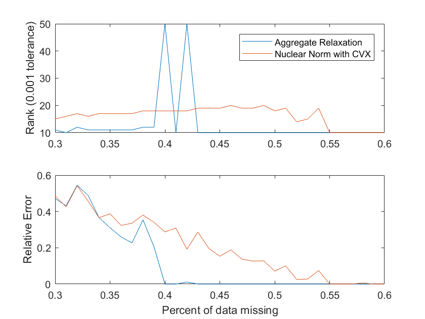
This looks to be working well, theres just one minor issue: If the number of iterations is to small, it doesnt get to a small enough value of epsilon to reduce the residual ion the singular calues past what it decides is okay to be big, wow im explaining this bad, but you know what i mean. epsilon is too big so the 11th sv is too big. yeah, that. I just happened once here at the p=0.42. Honestly i have no idea what happend at 0.4. Not sure what a better convergence condition would be. Ask Prof Mitchell if he has any ideas for that!! But the median of a lot of runs will look pretty good.
Adding noise!
Whats a good way to add noise? Well, um, it should be symmetric, right? Yeah, probably, because if this was a measurement, then id be measuring Mij and Mji to be the same thing, im not measuring two things, so theyll have the same noise. Otherwise youre gaining information.
One thing to think about, I'm going to need some kind of tolerance parameter, $ \gamma $ for the equality constraint
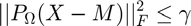
Whats a good choice for 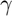? Well, it has to be larger than 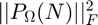 Where 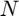 is the noise measurement. I could do the math or just type that into matlab real quick:
noise=randn(50);
noise=0.05*.5*(noise'+noise);
disp(norm(P.*noise, 'fro')^2);
0.4819
So then, maybe we could just say 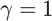 for now? Lets try that.
clear; rankTol=0.5; gamma=0.6; eps=5; x=randn(10,50); noise=randn(50); noise=.5*(noise'+noise); D=x'*x+ 0.05*noise; if exist("Section3.mat", 'file')~=2 plist=0.4:0.1:0.7; for i=1:length(plist) pavg=plist(i); [M] = sampleUniformSymmetric(D,pavg); P=~(M==0); [ XNuc ] = nuclearNormPSD( M,P , gamma); relErrnuc(i)=norm(x'*x-XNuc,'fro')/norm(x'*x,'fro'); rankResnuc(i)=sum(svd(XNuc)>rankTol); [X,U, obj]= aggregatedRelaxationPADM(M,P, 2.5,1, gamma); relErr(i)=norm(x'*x-X,'fro')/norm(x'*x,'fro'); rankRes(i)=sum(svd(X)>rankTol); fprintf("Pavg: %f \t PADM Error: %f \t Nuc Error: %f \t PADM Iterations: %i \n", pavg,relErr(i), relErrnuc(i), length(obj)); end save("Section3.mat") else load("Section3.mat") end figure() subplot(2,1,1) plot(plist, rankRes) hold on plot(plist, rankResnuc) legend(['Aggregate Relaxation', "Nuclear Norm with CVX"]) ylabel("Rank (0.5 tolerance)") subplot(2,1,2) plot(plist, relErr) hold on plot(plist, relErrnuc) ylabel("Relative Error") xlabel("Percent of data known")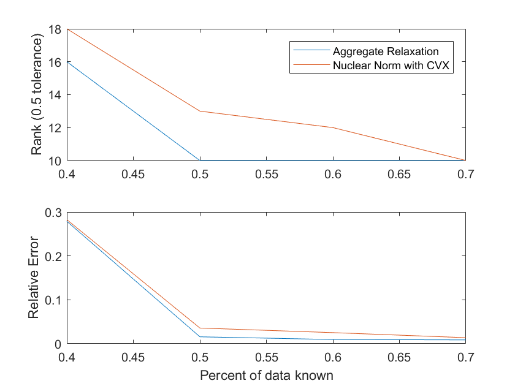
After much trial and error, I made this work, however the method of decreasing epsilon at each iteration doesnt really work. It just ends up converging to an higher objective function. This indicates that because the case with noise takes longer to converge, we should let it converge and then increas the parameter.
Idk, maybe ill do this sometime soon. If so i'll put it right here!
Comparison to more methods
So heres a good idea: lets adapt this code to instead solve this problem:
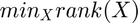
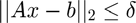
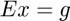
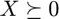
With this, i'll be able to go between euclidean distnace, matrix completion, or any other rank minimization problem. All solvers should be called as solver(x0,A,b,delta,E,g, params), and params should be an optional input.
Update: I did it. So thats cool. i also modified the code for the PADM in the non-relaxed version too.
clear; if exist("Section4.mat", 'file')~=2 rankTol=0.001 x=randn(10,50); D=x'*x; plist=[0.3:0.01:0.6]; for i=1:length(plist) [A,b] = sampleUniformSymmetric(D,plist(i)); [ Xnuc ] = nuclearNormPSD(zeros(50,50),[],[],0,A,b, []); [ Xar ] = aggregatedRelaxationPADM(zeros(50,50),[],[],0,A,b, [2.5, 0.7]); [ Xmpec ] = Rank_MPEC_PADM(zeros(50,50),zeros(1,2500),[0],1,A,b,1e6); [ Xlogdet ] = LogDetHeuristic(zeros(50,50),zeros(1,2500),[0],1,A,b,1e6); [ Xmm, obj ]=matrixRelaxationMM(zeros(50,50), [], [], 1, A, b, [1,1]); error(i,1)=norm(Xnuc-D, 'fro')/norm(D, 'fro'); error(i,2)=norm(Xmpec-D, 'fro')/norm(D, 'fro'); error(i,3)=norm(Xlogdet-D, 'fro')/norm(D, 'fro'); error(i,4)=norm(Xar-D, 'fro')/norm(D, 'fro'); error(i,5)=norm(Xmm-D, 'fro')/norm(D, 'fro'); rank(i,1)=sum(svd(Xnuc)>rankTol); rank(i,2)=sum(svd(Xmpec)>rankTol); rank(i,3)=sum(svd(Xlogdet)>rankTol); rank(i,4)=sum(svd(Xar)>rankTol); rank(i,5)=sum(svd(Xmm)>rankTol); end save("section4.mat") else load("section4.mat") end rankTable = array2table([plist', rank], 'VariableNames', {'Percent_of_Data_Known', 'Nuclear_Norm', 'MPEC_PADM', 'Log_Det', 'Augmented_Relaxation', 'Matrix_Relaxation'}); errorTable = array2table([plist', error], 'VariableNames', {'Percent_of_Data_Known', 'Nuclear_Norm', 'MPEC_PADM', 'Log_Det', 'Augmented_Relaxation', 'Matrix_Relaxation'}); disp("Rank:"); disp(rankTable); disp("Error:"); disp(errorTable); figure() subplot(2,1,1) plot(plist, rank) legend(["Nuclear Norm", "MPEC PADM", "Log Det", "Augmented Relaxation", "Matrix Relaxation"],'Location','EastOutside') ylabel("Rank (0.001 tolerance)") subplot(2,1,2) plot(plist, error) ylabel("Relative Error") xlabel("Percent of data missing")
Rank:
Percent_of_Data_Known Nuclear_Norm MPEC_PADM Log_Det Augmented_Relaxation Matrix_Relaxation
_____________________ ____________ _________ _______ ____________________ _________________
0.3 16 10 36 13 10
0.31 16 11 28 13 11
0.32 18 11 32 15 11
0.33 17 11 33 14 10
0.34 17 12 27 14 11
0.35 17 11 27 14 10
0.36 18 12 37 14 10
0.37 19 11 29 14 11
0.38 19 11 31 15 10
0.39 19 10 38 15 10
0.4 20 10 40 15 10
0.41 21 10 34 16 10
0.42 21 10 37 16 10
0.43 21 10 31 15 10
0.44 20 10 33 15 10
0.45 20 10 32 15 10
0.46 21 10 37 16 10
0.47 23 10 33 17 10
0.48 23 10 32 17 10
0.49 23 10 42 10 10
0.5 23 10 41 10 10
0.51 23 10 34 10 10
0.52 23 10 35 10 10
0.53 24 10 38 10 10
0.54 25 10 37 10 10
0.55 24 10 43 10 10
0.56 25 10 41 10 10
0.57 10 10 43 10 10
0.58 10 10 40 10 10
0.59 10 10 40 10 10
0.6 11 10 46 10 10
Error:
Percent_of_Data_Known Nuclear_Norm MPEC_PADM Log_Det Augmented_Relaxation Matrix_Relaxation
_____________________ ____________ __________ _______ ____________________ _________________
0.3 0.47218 0.51596 0.63799 0.47029 0.47185
0.31 0.45947 0.43968 0.65011 0.45929 0.43439
0.32 0.4696 0.4292 0.64947 0.47039 0.46678
0.33 0.43682 0.35327 0.63502 0.44021 0.50012
0.34 0.41731 0.21731 0.59738 0.40756 0.3286
0.35 0.37631 0.23433 0.55605 0.37507 0.42867
0.36 0.31409 0.15473 0.55409 0.30848 1.0525e-05
0.37 0.33819 0.077176 0.56103 0.31982 0.22052
0.38 0.28801 0.088233 0.57527 0.28604 0.026224
0.39 0.24935 0.020451 0.52272 0.23869 1.1844e-07
0.4 0.28464 0.032535 0.56685 0.2759 5.9667e-08
0.41 0.27352 0.041741 0.52369 0.26336 7.8738e-08
0.42 0.25831 0.040258 0.50635 0.25573 9.4527e-08
0.43 0.17061 0.018203 0.49659 0.15252 1.2273e-07
0.44 0.19818 0.032167 0.47457 0.18294 6.5848e-08
0.45 0.16557 0.013221 0.48916 0.13746 6.7914e-08
0.46 0.18024 0.0097364 0.48583 0.15162 5.4858e-08
0.47 0.2028 0.0032708 0.51343 0.18534 5.5395e-08
0.48 0.18448 0.0042271 0.50523 0.15499 9.191e-08
0.49 0.11008 0.01071 0.42408 4.5182e-10 8.9383e-08
0.5 0.11078 0.0014742 0.3973 9.5454e-10 2.3651e-07
0.51 0.056323 0.00057784 0.41508 1.8739e-10 2.2689e-07
0.52 0.11106 0.0018497 0.37865 4.6255e-10 2.9608e-07
0.53 0.078003 0.0011131 0.39813 3.3221e-10 2.3503e-07
0.54 0.013377 0.00016141 0.32437 9.683e-10 1.5788e-08
0.55 0.050279 0.00037713 0.39092 3.4698e-10 3.2411e-07
0.56 0.026463 0.00037312 0.31172 2.5305e-10 2.517e-08
0.57 1.6009e-05 9.9537e-05 0.37438 7.0492e-10 2.9491e-07
0.58 6.1228e-07 9.8104e-05 0.36231 6.3787e-10 3.529e-07
0.59 1.2473e-06 8.7838e-05 0.28213 1.4278e-09 3.696e-07
0.6 3.2572e-05 6.5913e-05 0.34128 1.9787e-09 1.2599e-08
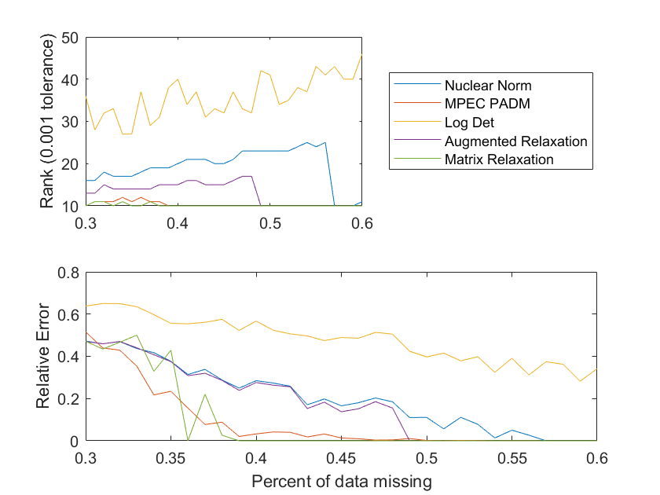 Euclidean Distance Problem
We now consider the Euclidean Distance Probelem. Lets pose it like this: we know the location of one anchor point. And that should be enough? no, no we need the location of d anchors where the points are in 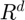. Or, we could just say rotate it all after we do rank minimization? Yeah, thats probably better? I just need a way to compare these results is all. so, then, we'll say this. Solve the problem, rotate it so that it best fits where we think out anchor points are. nice, good plan.
clear; if exist("Section5.mat", 'file')~=2 d=3; n=30; rankTol=0.001; plist=0.06:0.03:0.3; for i=1:length(plist) [points, distances, A, b]=generateSensorProblem(n,d,plist(i), 0); [ Xnuc ] = nuclearNormPSD(zeros(n,n),[],[],0,A,b, []); [ Xar ] = aggregatedRelaxationPADM(zeros(n,n),[],[],0,A,b, [5, 0.9]); [ Xmpec ] = Rank_MPEC_PADM(zeros(n,n),zeros(1,n^2),[0],1,A,b,1e6); [ Xlogdet ] = LogDetHeuristic(zeros(n,n),zeros(1,n^2),[0],1,A,b,1e6); [ Xmm, obj ]=matrixRelaxationMM(zeros(n,n), [], [], 1, A, b, [1,1]); error(i,1)=calcErrorPoints(Xnuc, points); error(i,2)=calcErrorPoints(Xar, points); error(i,3)=calcErrorPoints(Xmpec, points); error(i,4)=calcErrorPoints(Xlogdet, points); error(i,5)=calcErrorPoints(Xmm, points); rank(i,1)=sum(svd(Xnuc)>rankTol); rank(i,2)=sum(svd(Xmpec)>rankTol); rank(i,3)=sum(svd(Xlogdet)>rankTol); rank(i,4)=sum(svd(Xar)>rankTol); rank(i,5)=sum(svd(Xmm)>rankTol); end save("section5.mat") else load("section5.mat") end rankTable = array2table([plist', rank], 'VariableNames', {'Percent_of_Data_Known', 'Nuclear_Norm', 'MPEC_PADM', 'Log_Det', 'Augmented_Relaxation', 'Matrix_Relaxation'}); errorTable = array2table([plist', error], 'VariableNames', {'Percent_of_Data_Known', 'Nuclear_Norm', 'MPEC_PADM', 'Log_Det', 'Augmented_Relaxation', 'Matrix_Relaxation'}); disp("Rank:"); disp(rankTable); disp("Error:"); disp(errorTable); figure() subplot(2,1,1) plot(plist, rank) legend(["Nuclear Norm", "MPEC PADM", "Log Det", "Augmented Relaxation", "Matrix Relaxation"], 'Location','EastOutside') ylabel("Rank (0.001 tolerance)") subplot(2,1,2) plot(plist, error) ylabel("Relative Error") xlabel("Percent of data missing")
Rank:
Percent_of_Data_Known Nuclear_Norm MPEC_PADM Log_Det Augmented_Relaxation Matrix_Relaxation
_____________________ ____________ _________ _______ ____________________ _________________
0.06 5 2 3 2 2
0.09 10 2 6 2 2
0.12 6 3 4 3 3
0.15 6 3 4 3 3
0.18 6 4 6 4 4
0.21 6 5 5 3 3
0.24 7 3 3 3 3
0.27 3 5 3 3 3
0.3 3 3 3 3 3
Error:
Percent_of_Data_Known Nuclear_Norm MPEC_PADM Log_Det Augmented_Relaxation Matrix_Relaxation
_____________________ ____________ __________ ________ ____________________ _________________
0.06 0.78018 0.82847 0.97585 0.79738 0.81364
0.09 0.57119 1.0792 0.70915 0.68973 0.89581
0.12 0.51055 0.99984 0.72051 0.57362 0.63852
0.15 0.43839 0.55916 0.65309 0.43406 0.48058
0.18 0.4346 0.52843 0.51452 0.37627 0.46152
0.21 0.256 0.13117 0.27349 0.19696 0.13117
0.24 0.16221 0.17537 0.20042 0.18161 0.18077
0.27 0.087706 0.094198 0.25978 0.090966 0.090511
0.3 8.0341e-10 4.6148e-09 0.021216 0.00062743 1.415e-08
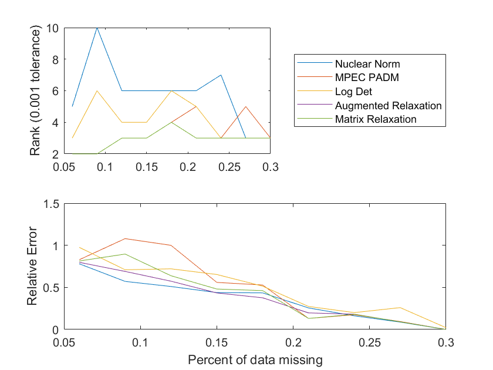